Chapter 10 Live
👉 Visualize the Live state of the stage and Exam any stored object to keep control of the fixtures’ param values.
This chapter deals with the real time visualization of fixtures and parameters based on a customizable filtered spreadsheet table, an icon based visualization, a topographical interactive view, and a view dedicated to stored objects and values examination.
Chapter index:
Vibe has different ways to display parameter data:
Live View - shows editor and playback values as a spreadsheet.
Live Parameter View - shows editor and playback data in a graphic icon-based format.
Exam View - shows the values and data of any stored object.
Topo View - shows a stage topography with interactive icons.
10.1 Live View
The Live view is split into 4 different modes:
Live Full: shows the list of fixtures
Live Per Device: shows the list of fixtures, divided per device
Live Full Sub Device: shows the list of fixtures and subfixtures
Live Per Device Sub Device: shows the list of fixtures and subfixtures, divided per device
The preferred Live View mode may be loaded from the Vibe Menu, Program Views, Live submenu.
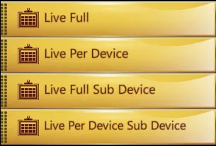
Live View Mode may be changed at any time on the view’s settings popup.
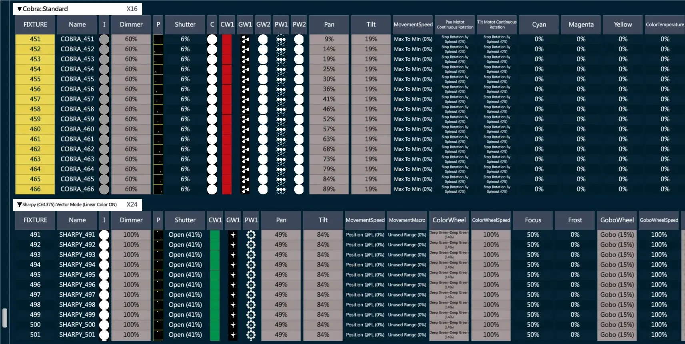
10.1.1 Live Options
Live View Options are on the Live view’s menu.
These options are used to filter the parameter columns shown in the Live View and the format of the displayed values.
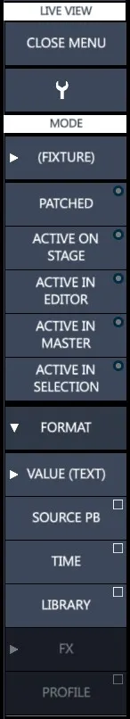
Sets - Select which of the fixture sets to display.
Fixture
Channel
Spot
Matrix
Media Server
Custom Sets (if created)
PATCHED - Toggle button to filter the fixtures to display.
Toggled OFF displays all the created fixtures.
Toggled ON displays only the patched ones.
ACTIVE - Radio buttons to filter the fixtures to display.
if All the Active options are OFF, the view shows all the fixtures.
if Active On Stage is on, only parameter columns that are selected in the editor or have values derived from the active stage look are shown.
if Active In Editor is on, only parameter columns that are selected in the editor are shown.
if Active In Master is on, only parameter columns that have values derived from the current Master Controller are shown.
if Active In Selection is on, only parameter columns of the fixtures that are currently selected in the editor are shown.
Format - Controls what data is displayed in the cells.
Value > % (Values in percentage)
Value > Decimal (DMX values 0 ⟶ 255 )
Value > Text (Parameter step text)
Value > Text + % (Parameter step text and values in percentage)
Source PB (The source triggering the value, either it is the editor or a controller)
Time (Parameter time, if specified in the editor)
FX (Not implemented yet.)
Profile (Not implemented yet.)
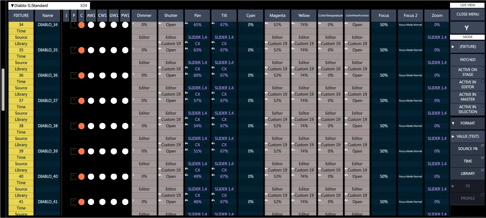
👉 Value options will be applied in the parameter cells, while Source PB and Time options will add new lines under each fixture to show the new information.
10.1.2 Live Settings
Live View Settings are on a popup accessible by tapping the Settings icon.
The Live View Settings popup divides the settings that the user may configure in the following tabs:
Display
Behavior
Sizing
10.1.2.1 Display
The Live View Display tab is to set the cells that are shown and the order of the parameter columns.
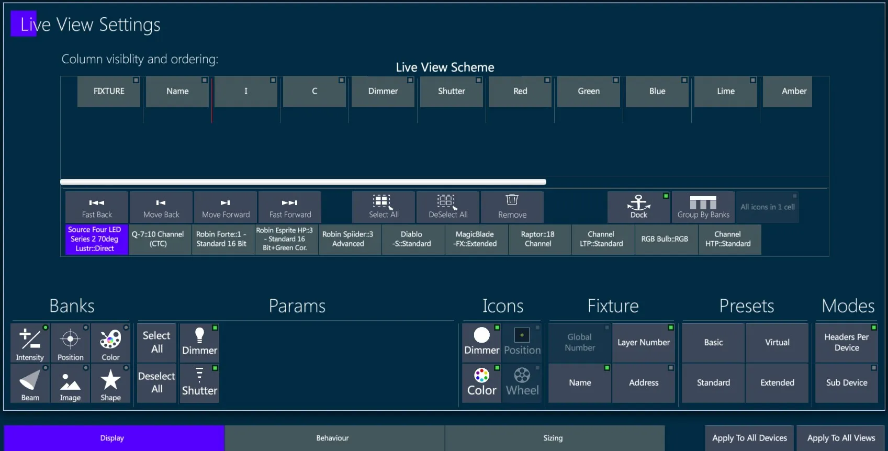
Live View Scheme - Parameter columns may be freely added, removed, or moved in the grid by selecting and tapping on the move keys.
When the view is in Headers per Device Mode the imported devices are shown on the bottom of the scheme and may be edited independently form one each other.
{Apply to All Devices} applies the column order of the current visualized device to all the other ones, when possible (for the parameters that the devices have in common).
{Apply to All Views} applies the Live view’s settings to all the Live Views that are in the Layout.
To Move columns:
Tap a parameter column heading or multiple parameter column headings - the green indicator light will turn on.
Use the {|<} or {>|} keys to move the parameter column forward or backwards.
To Move columns to the first or last position:
Tap a parameter column heading or multiple parameter column headings - the green indicator light will turn on.
Use the {|<<} or {>>|} keys to move the parameter column first position or last position.
To Remove columns:
Tap a parameter column heading or multiple parameter column headings - the green indicator light will turn on.
Tap the {Remove} key.
The {Dock} option locks the column scroll at the end of the parameter column that is docked. A red line will show on the live display to show the dock position.
The {Group By Banks} option automatically groups and orders the columns corresponding to the same param bank.
The {All icons in 1 cell} option is Not implemented yet..
Banks and Params - Columns are added using the icons in the Param box, visualized by bank according to the bank selected in the Banks box.
To Add or Remove columns:
Select a bank - All parameters for the bank will appear in the box adjacent to the banks.
Select the parameter or parameters to add to the live display.
👉 Swipe in the the parameter box to browse hidden parameters.
- Tap a parameter that is not already selected in green and it will be added to the end of the column list.
👉 Parameter keys are toggles so if the indicator light is on, touching the parameter will remove it. Tapping again will put it back at the end of the columns. .
- Use the {|<} or {>|} {|<<} or {>>|} to position the column.
Icons - Adds or removes the interactive icons columns.
👉 Interactive Icon keys are toggles so if the indicator light is on, touching an icon key will remove it. Tapping again will put it back at the end of the columns..
Fixture - Toggle on/off the fixture information.
Global Fixture Number - Fixture’s hidden unique system number.
Layer Number - Adds or removes the Fixture Number column.
Name - Adds or removes the Fixture Name column.
Address - Adds or removes the Fixture Address column.
👉 Fixture # and Fixture Name are toggles so if the indicator light is on, touching an icon key will remove it. Tapping again will put it back at the end of the columns.
Presets - Load the most common Live View columns configurations.
👉 Fixture Layer Number and Name are included in all presets.
Basic - Live view preset that only shows the basic param columns
Virtual - Live view preset that only shows the interactive icons and the virtual parameters
Standard - Live view preset that shows all the param columns, including the virtual parameters, and the interactive icons
Extended - Live view preset that shows everything, including the fixture address column
Mode - Change the Live View Mode.
The Live View Settings popup has two keys to switch On/Off the “Headers Per Device” and the “Sub Device Mode” visualization options.
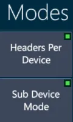
- Headers per Device - Groups the fixtures visualization by devices, showing the device name on each header.
👉 Headers can be collapsed by tapping on the arrow in the header.
- Sub Device Mode - Toggles on/off the visualization of sub-fixtures, available when the device contains sub-devices.
10.1.2.2 Behavior
The Live View Behavior tab is to set the view’s interactions.
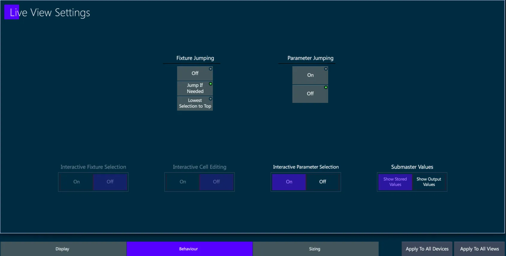
Fixture Jumping
Off - No jumps.
Jump if needed - Live display pages the display to show the selected fixtures if they are not shown on the current live page.
Lowest Selection to Top - Jumps the lowest fixture number of the selection to the top of the live display.
Parameter Jumping
On - Jumps the parameter’s column and related bank parameters to the first scrollable column (the end of the Dock position).
Off - Does not jump.
Interactive Fixture Selection
- Turns on the ability to make fixture selections from the live display grids.
- Not implemented yet.
Interactive Cell Editing
- Turns on the ability to directly edit cells in the live display grid.
- Not implemented yet.
Interactive Parameter Selection
- Enables parameters to be directly selected by tapping on the relative live display header.
Submaster Values
Show Stored Values - Dimmer parameters under the control of Group Submasters will continue to show their stored values and the Submaster icon will also be shown to indicate when the parameter is inhibited.
Show Output Values - When the Submaster is pulled down, the actual dimmer output values will be shown in the live display dimmer column.
10.1.2.3 Sizing
The Live View Sizing tab is to set the column width options.
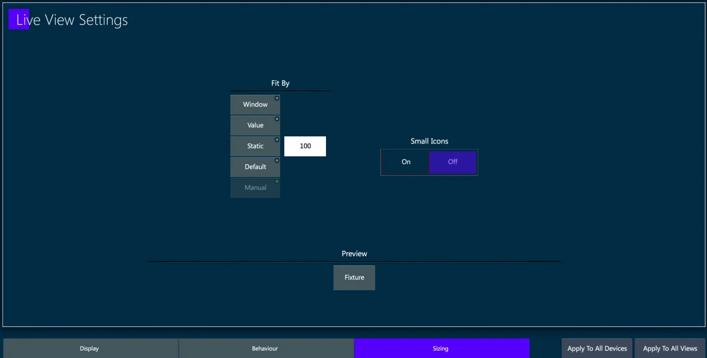
Fit By
Window - the columns size depends on the window size
Value - the columns size depends on the values format
Static - the columns size depends on the number written in the box
Default - the columns size is set as default their size
Small Icons
On - the interactive icons columns are sized as small as their content
Off - the interactive icons columns are sized like the other columns
👉 The Preview on the bottom shows a preview of the column size by showing as a sample the Fixture column header.
10.2 Live Param View
The Live Parameter View shows values in a table format instead of spreadsheet format.
There are three Live Parameter Modes accessible from the view’s menu:
Live Parameters
Live Banks
Live Fixtures
Mode - Select the options of the fixture / parameter icons displayed.
- Live Parameter - Fixtures are graphically displayed by icons per parameter.
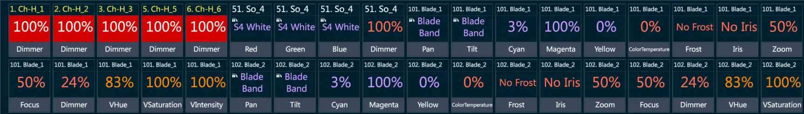
As an evolution to the theatrical consoles concept, parameters other than dimmer are also shown.
Parameters visible in Live Parameter Mode can be filtered by using the Parameter View Settings popup. To Filter Parameters: 1. Tap the Settings icon to open the Parameter View Settings popup. 2. Tap parameters on either side to move them from one box to the other. 3. Close the popup with [ENTER] or the Apply icon.
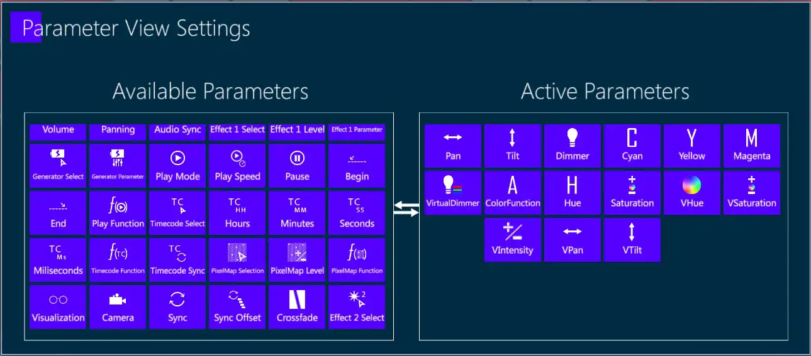
- Live Bank- Fixtures are graphically displayed by icons per bank.
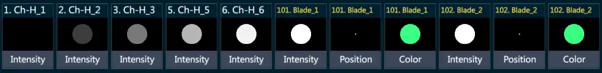
Currently three banks can be graphically viewed:
Intensity - In the form of an illuminated circle.
Position - In the form of a cursor that moves in a black rectangle representing the stage.
Color - In the form of a circular color swatch (Color wheels are not currently supported.)
Live Fixture - Fixtures are graphically displayed by icons per fixture
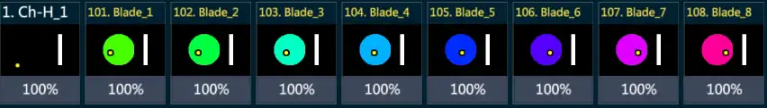
Intensity, Position, and Color bank icons are merged into a single icon for each fixture.
Active On Stage - Toggle button.
If off, all fixtures are shown.
If on, only fixtures that are selected in the editor or have values derived from the active stage look are shown. All others are hidden.
Sets - Select which of the fixture sets to display.
Fixture
Channel
Spot
Matrix
Media Server
Custom Sets (if created)
Format - Controls what data is displayed in the cells.
Value > % (values in percentage)
Value > Decimal (DMX values 0 ⟶ 255 )
Value > Text (Parameter step text)
Value > Text + Percentage (Parameter step text and values in percentage)
10.3 Exam View
The Exam View is made for viewing and checking the content of stored object and show data.
Use Exam to analyze the Vibe show file with all the stored data, objects and values, navigating through an intuitive tree structure.
The Exam view contains all the data stored in the show, divided by object type.
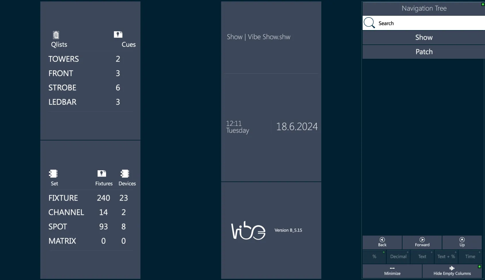
The root menu is divided into two main sub menus, {Show} and {Patch}.
The Exam feature allows to check the content of anything that has been created or stored, for example the Fixtures into a Group, the Parameters into a Library, the Controllers into a Snap.
Exam view can also be opened with the [EXAM] key. If an object is selected, the view will jump directly to that object’s exam view.
[GROUP] [2] [EXAM] - visualize the data of Group 2.
[LIBRARY] [2] (Position) [1] [EXAM] - visualize the data of Position Library 1.
[FIXTURE] [3] [EXAM] - visualize the data of Fixture 2.
- When a Qlist is the selectd object, the syntax won’t jump to the Exam View but to the Qlist Tracksheet instead, loading the selected Qlist.
[QLIST] [3] [EXAM] - visualize the data of Qlist 3 in the Tracksheet view.
👉 The Exam Popup may be opened on the current page by pressing [SHIFT]+[EXAM]. This turns useful if there is not an Exam View in the layout.
10.3.1 Show Exam
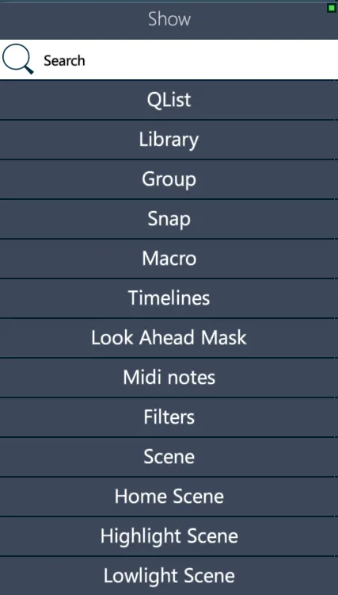
Qlist - List of all show Qlists with Cues Count.
[QLIST] [#] [EXAM] - Displays a Cue Data sheet and a tab with all the libraries referenced in the Qlist.
[CUE] [#] [EXAM] - Displays a track sheet for the selected Cue, Set tabs, and a tab with all the libraries referenced in the Cue.
Library - List of all stored Libraries types with Count.
[Library Type] [#] [EXAM] - Displays all libraries for the selected library type.
[LIBRARY] [#] [EXAM] - Displays fixtures and parameters values for the stored library, Set tabs, and a tab with all the Cues with reference to the Library.
Group - List of all stored Groups with Fixtures Count.
[GROUP] [#] [EXAM] - Displays all the fixtures in the group in their selection order.
[FIXTURE] [#] [EXAM] - Displays the selected fixture’s information organized in tabs by Patch, Sets, Cues, Libraries.
Snap - List of all stored Snaps.
- [SNAP] [#] [EXAM] - Graphically displays the Controllers recorded in the Snap and their status and configuration.
Macro - List of all stored Macros.
- [MACRO] [#] [EXAM] - Displays all macro steps, time (if enabled), macro state, and macro commands.
Timelines - List of all stored Timelines.
- Not implemented yet.
Look Ahead Mask
- Displays which fixtures are enabled for the Look Ahead feature, with Set tabs.
Midi Notes - List of the patched MIDI Notes.
- Displays patched Midi notes (currently unimplemented, use {I/0 Settings} as an alternative.)
Filters
[FILTERS] [EXAM] - Displays all macro steps, time (if enabled), macro state, and macro commands.
[FILTERS] [#] [EXAM] - Not implemented yet.
Scene - List of all stored Scenes.
[SCENE] [EXAM] - Displays a list of the Scenes and Submasters.
[SCENE] [#] [EXAM] - Displays a track sheet for the selected Scene, Set tabs, and a tab with all the libraries referenced in the Scene.
[SCENE] (Submaster) [#] [EXAM] - Displays all the fixtures in the Submaster in their selection order.
Home Scene
- [HOME] [EXAM] - Displays all fixtures and parameters stored in the Home Scene, with Set tabs.
Highlight Scene
- [H.LIGHT] [EXAM] - Displays all fixtures and parameters stored in the Home Scene, with Set tabs.
Lowlight Scene
- [L.LIGHT] [EXAM] - Displays all fixtures and parameters stored in the Home Scene, with Set tabs.
10.3.2 Patch Exam
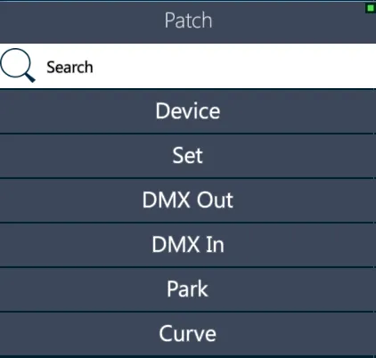
Devices - List of all imported Devices and their properties.
- Individual Device Exam - Displays graphically the DMX parameter allocation for the current device and mode.
Sets - List of all Sets with Fixtures Count.
Individual Set Exam - Displays the fixtures in the Set with Fixture ID #, Set ID #, Name, Device.
Individual Fixture Exam - Displays the selected fixture’s information organized in tabs by Patch, Sets, Cues, Libraries.
DMX Out - List of all DMX universes that have fixtures patched, with Fixtures Count.
- Individual Universe Exam - Displays graphically a table of patched fixtures and their DMX properties.
DMX In - Displays DMX inputs used on each DMX input universe available.
- Individual Universe Exam - Displays a table of DMX input assignments.
Park - Displays the Count of parked Addresses and Fixtures.
Park Address - Displays a list of all parked addresses.
Park Fixture - Displays a list of all parked fixtures and parameters.
Curve List of all the Curves.
Curves Exam - Displays a list of all read only and user created Functions and which of them are included in the favorites list.
Individual Curve Exam - Not implemented yet.
10.4 Topo View
Topo is the short name for “Topographical Display”, it is a view used to make fast and intuitive the process of fixture selection and the triggering of stored objects.
Practical samples of some Topo applications can be:
show the light plan to other users (also as a patch-map for technicians),
make graphical fixture selections (and forget about fixtures’ IDs),
leave a smart interactive control screen to “not-expert” users,
check the fixtures’ live status on the stage and easily program offline.
When starting a new show any Topo view stored in the layout will be empty until the system is patched and fixtures are assigned to a Topo.
Virtually unlimited Topos may be created and displayed in a Topo view. Fixtures and objects may be shared by different Topos.
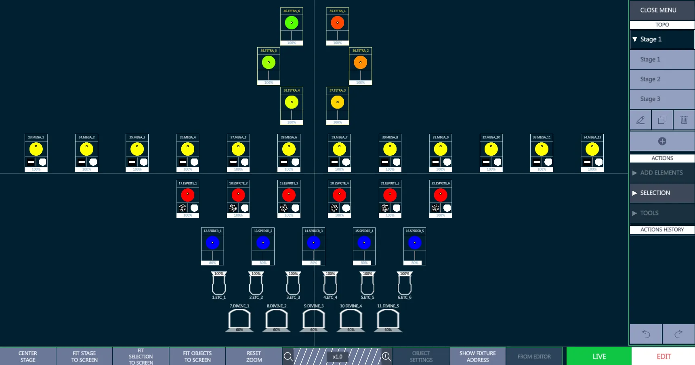
Topo view’s toolbar collects some visualization options to fastly center the stage and fit it to the screen, as well as an horizontal slider to zoom manually at the desired distance.
The {Show Address} / {Show Name} button toggles between the visualization of the patched addresses and the fixtures names on the icons.
The Topo view has 2 operating modes, switchable with the toggle button on the bottom right:
{LIVE}: Topo toolbar and menu get a Green frame. Enables fixture selection and object triggering, locks the Topo editing.
{EDIT}: Topo toolbar and menu get a Red frame. Enables all the Topo editing options, disables fixture selection and object triggering.
10.4.1 Topo Toolbar
The Topo Toolbar is on the bottom of the Topo View and is used for Topo navigation and for the most common Topo Actions.
Horizontal Slider - allows to Zoom In nd Zoom Out the Topo, showing the multiplier
Center Stage - centers the Topo to the axes origin
Fit Stage to Screen - adapts the Zoom to visualize all the stage
Fit Selection to Screen - adapts the Zoom to visualize all the selected object on the Topo
Fit Stage to Screen - adapts the Zoom to visualize all the existing object on the Topo
Reset Zoom - sets the Zoom multiplier to x1.0
👉 The last Topo Zoom settings used are automatically kept when changing the selected Topo or switching Vibe pages.
- Object Settings - opens the object settings popup to customize the Fixture Icons and to define the wheels that should be visualized for each device’s icon.
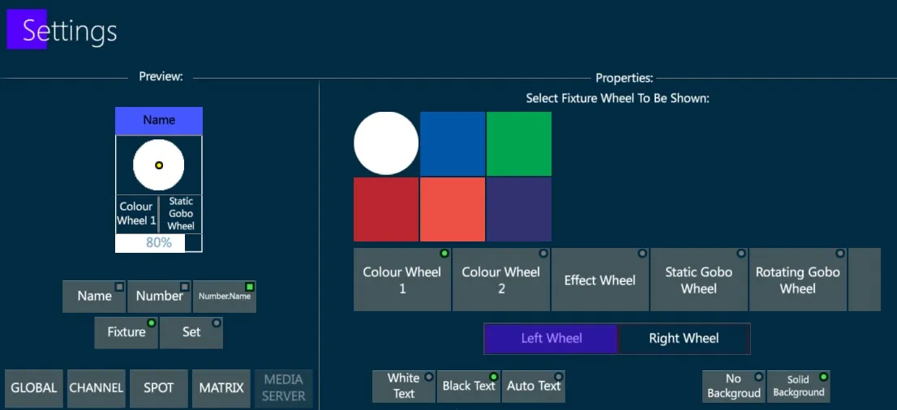
Object Settings may be configured independently for each fixture icon.
If different fixtures are selected, the bottom line allows switching between them.
Fixture Icons may have a custom text and background color.
Text options: White, Black, Auto (opposite to the background)
Background options: transparent (No Background), colored (Solid Background)
Show Fixture Address / Name - switches the visualization on the fixture icons’ headers between the Fixture Names and the DMX Addresses.
👉 When the Stage Patch information needs to be shared with the Lighting Technicians, apart from exporting the Patch Data with the list of fixtures and addresses through the Show Report function in the Vibe Show Menu, a screenshot of the Topo showing the Fixture IDs and Addresses may be taken, to easily share a map of the lighting rig referencing the addresses to the fixtures’ positioning.
- From Editor - selects the current fixture selection from the Editor and adds it to the Topo.
👉 A single press on {From Editor} adds the fixture selection directly, while a long press gesture allows to drag&drop the selection on the Topo to the desired position.
10.4.3 Topo Actions
To create a new Topo, navigate to a Topo view, then:
- Tap the {+} key in the Topo Menu. - The “Create New Topo” popup will appear.
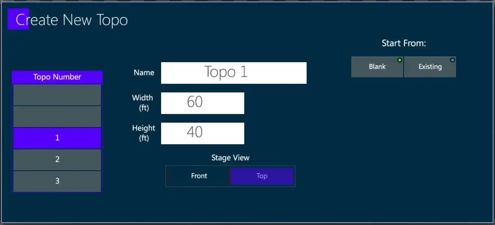
Select the desired Topo number, and give the Topo a unique name.
Enter the size of the Stage surface. The stage dimensions may be in be in Imperial or Metric. This default is set in the System Settings popup.
Select the stage point of view. The default is Top view.
Tap Apply or press [ENTER] - This closes the popup, enters Topo {Edit} mode, and the grid will be displayed.
{Add Elements}
{Sets} Opens the filter of all available sets: Fixture, Channels, Spots, Matrix, Servers, and users created sets.
{Groups} Opens the filter of all available groups.
{Libraries} Opens the filter of all available libraries (Intensity, Position, Color, …).
{Macros} Opens the filter of all available macros.
{Snaps} Opens the filter of all available snaps.
{Filters} Opens the filter of all available filters.
{Pixel Mapper} Adds a User definable matrix to be used for Pixel Mapping.
{From Editor} Allows to Drag&Drop on the Topo the elements that are selected in Vibe’s editor.
{Text Label} Opens a popup to create a customizable text label.
{Line} Adds a customizable line.
{Background} Adds/Removes a customizable and adjustable background image.
{Selection}
👉 All types of selection must start outside of the fixture icons.
Rectangle: Selection by creating a rectangular shape, dragging from left to right or right to left to surround the target objects.
Lasso: Selection by creating a free-form path, dragging through the target objects.
Circle with X: De-selection of all selected icons all. The same operation can be done with a double tap on an empty area of the Topo.
Delete selected (only in Edit Mode).
Snap to Grid: Fixtures and object will snap to the nearest grid node.
Sync to Editor: Fixtures can be selected using the embedded keypad (only in Edit Mode).
{Tools}
{Align}: Aligns the selected elements horizontally to the left, center or right, and vertically to the top, middle or bottom. The alignment can also be set on a circular or a square shape and between two points it is possible to adjust the element location on the shape, the radius and the ending point.
{Align to Point}: A base point must be specified on the Topo surface as a starting reference. The options are the same as Align except there is no point to point.
{Spread} (Fan): Spreads the selected elements horizontally from the left, center or right, and vertically from the top, middle or bottom. When Spread is selected, a virtual modifier wheel will appear.
{Transform} - Modifies size and rotation of the objects to scale and rotate and to rotate of 45 degrees clockwise or counterclockwise. The last icon is to resets the transform options.
{Arrange by Calibration} - When tapped, selected fixture icons get their positions from the XYZ calibration.
10.4.4 Add Elements
Fixtures
There are two ways to add fixtures to a Topo, from the keypad or from the Topo menu.
- Keypad selection
Press zoom option {FIT STAGE TO SCREEN} on the toolbar at the bottom of the Topo View to see the whole stage area.
Select the fixtures using the keypad or a group.
Tap {FROM EDITOR} on the toolbar at the bottom of the Topo View.
Selected fixtures will now appear in the top right section of the Topo.
The fixtures will be selected (outlined in red), and can be dragged freely into place.
Double tap in a clear space on the TOPO to deselect.
If the {From Editor} key is selected with a long press (held for a few seconds) the fixtures may be directly dragged from the {From Editor} area. Only a maximum of 5 fixture icons will be shown but the whole selection will actually be there. Drag the fixtures to a location on the Topo view and drop. The fixture icons will now appear on the Topo surface. The reference point for dropping the fixtures is the top left corner of the dragged fixture icons.
- {ADD ELEMENTS} (from the Topo menu)
Fixtures
Create the Topo
From the Topo menu tap {ADD ELEMENTS}
From the drop down, tap {SETS}
From the next drop down, select a fixture set - A list of the fixture in the set will drop down.
From the fixture list, select the fixtures to drag onto the Topo.
Press, hold and drag the fixtures onto the Topo surface.
Double tap in a blank area of the Topo to deselect the fixtures.
👉 Add SubFixtures to the Topo View in the same way the main fixtures are added by using the {From Editor} functions. The Topo View supports fixture layers (for example for Fixture 70, SubFixtures 70.1 -> 70.7), so they can be added to any Topo as independent objects.
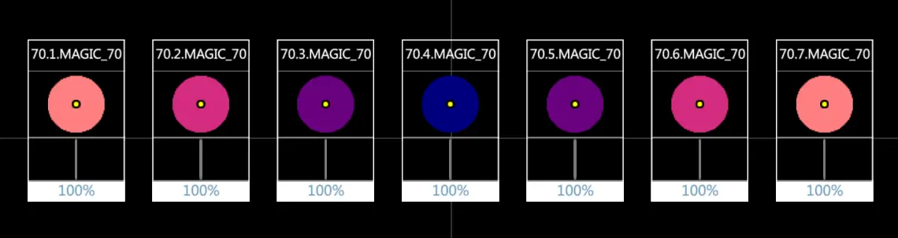
Softkeys
There is an option to add softkeys of any type to the Topo with dragging and dropping items from the menu.
Using the same methods for adding fixtures to the Topo, drag the objects into the grid.
Softkey objects that can be currently added to the Topo include:
Groups
Libraries
Macros
Snaps
Filters
Softkey object icons can be arranged on the Topo in the same way the fixture icons are.
Pixel Maps
The pixel mapper creates a matrix of fixtures.
The aspect ratio of the pixel map is controlled by the number of columns and rows that are created. Matrix fixtures may be selected by blocks using the rectangle or the lasso selection tools.
- Create a new pixel mapper:
From the Topo Actions menu, tap {Add Elements}
From the {Add Elements} drop down, tap {Pixel Mapper} - The Create New Pixel Mapper popup will appear.
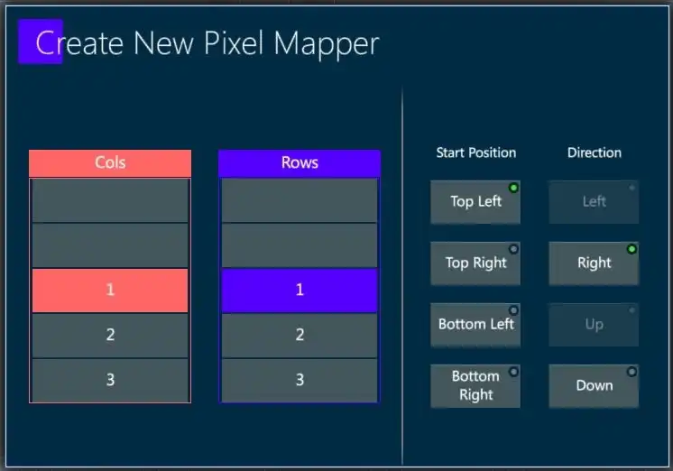
Fill in the number of columns and rows and set the start position and direction.
Press [ENTER] or tap Apply to close the popup and create the blank pixel map.
👉 Currently, the pixel map will appear in the top right corner and in some cases, a zoom out will be needed to find the pixel map and drag it back to the desired location..
Using the same methods for adding fixtures to the Topo, drag the fixtures into the pixel map matrix.
Release the fixtures and they will populate the pixel map. 👉 The number of fixtures must not exceed the number of pixel mapper cells..
The populated matrix in {Edit} Mode will display the fixture numbers in each cell. In {Live} Mode, the fixture’s color mix will be shown. CMY, RGB, and HSV color spaces are supported.
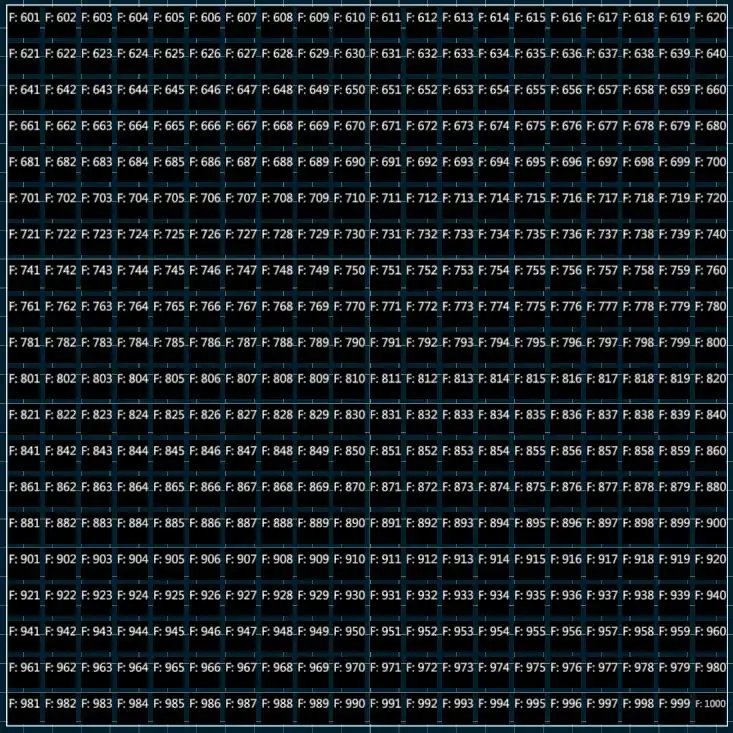
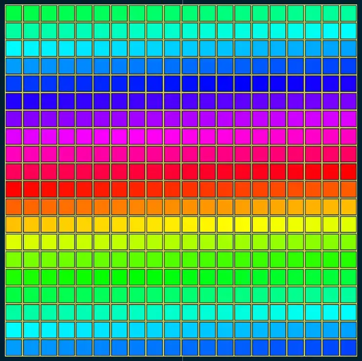
👉 Multiple pixel mappers may be added to the same Topo along with other objects.
👉 The current Pixel Mapper is for the selection of fixtures and displaying of live output but future versions will add the ability to map content to individual pixel maps.
Labels
Text labels of any color can be added don the Topo, for example to put notes, descriptions, or important information.
- Create a new text label:
From the Topo Actions menu, tap {Add Elements}
From the drop down, tap {Text Label} - The Create Label pop-up will appear.
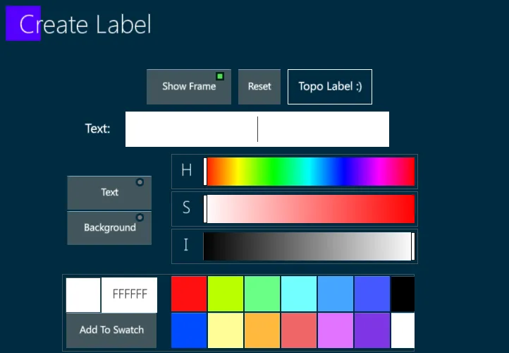
Close the pop-up and the test label will appear on the Topo surface.
Drag the label to the desired location.
Transpose tools may be used to size and rotate the label.
Line
Not implemented yet.
Background
Backgrounds images, such as studio layouts, renderings and rig elements, may be added to the Topo.
Add a new background:
Prepare a USB stick with a JPEG, BMP, or PNG file content.
Insert the USB stick into one of the Vibe’s USB ports.
Tap {Add Elements} on the Topo menu.
Tap {Add Background} - A browser popup will appear.
Select the USB stick and click on the desired content - Once imported, the content may be found in the default local directory on the hard-drive under D:
Tap {Load}, [ENTER] or tap Apply to close the popup and place the content as a background to the Topo.
Remove a background:
Tap {Add Elements} on the Topo menu.
Tap {Remove Background}.
Edit a background:
Topo background images can be edited in size and position, through the tools under the Add/Remove Background buttons.
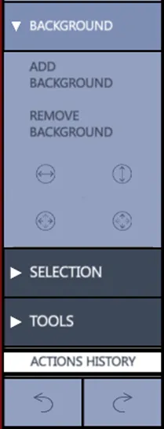
10.4.5 Selection
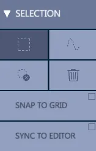
Fixture Selection may be switched at any time between the Square and the Lazo mode.
The Deselect key toggles off the current object selection. The same result may be achieved through a double tap on any empty area of the Topo.
The trash bin is to Delete the currently selected object from the Topo.
Snap to Grid option forces the objects to be positioned along the Topo Grid, while in Edit Mode. If the option is not enabled the objects are free to be positioned anywhere.
Sync to Editor option synchronizes the Topo selection with the Editor selection.
10.4.6 Tools
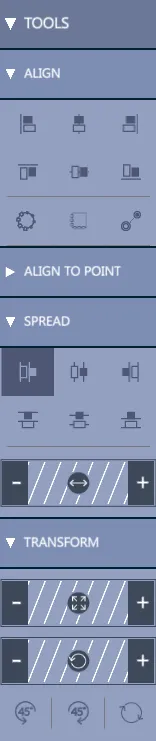
Align sub-menu contains all the align options that may be applied to the icons.
Selected icons may be aligned to the left, central or right icon
Selected icons may be aligned to the top, central or bottom icon
Selected icons may be aligned in a Circle shape, in a Square shape, or in a Line between 2 points. Both Circle and Square alignment options may be adjusted through the virtual sliders that appear when they are applied.
Align to Point sub-menu contains basically the same options of the Align, but the alignment instead of being based on the first selected fixture may be based on any point of the Topo by tapping on it.
Spread sub-menu contains all the spread options that may be applied to the icons.
Selected icons may be spread to the sides, starting from the left, central or right icon
Selected icons may be spread up and down, starting from the left, central or right icon
Transform sub-menu contains all the transform options that may be applied to the icons.
Selected icons may be sized bigger or smaller
Selected icons may be rotated in both directions
Selected icons may be rotated in steps of +/-45 degrees or their rotation may be reset to a 0 degrees rotation angle
Arrange by Calibration key automatically positions the selected icons on the Topo, following the Fixtures’ coordinates and the Stage Size that have been inserted (or imported) in the Calibration Data popup.
10.4.7 Live Mode
When the Topos are ready, they become a very useful tool to easily manage the fixture selection and the objects triggering.
Switching the Topo View to Live Mode, the frame will change from Red to Green to show that it is active.
While Topo Views in Edit Mode show the selected icons’ frames in Red, Topo Views in Live Mode show the selected icons’ frames in yellow.
Topo Samples
A few user samples of Topo Views utilities are show below.
Topos may be used to make a top visualization of the Lighting Rig and show the fixture addresses and patch information based on the fixture positions.
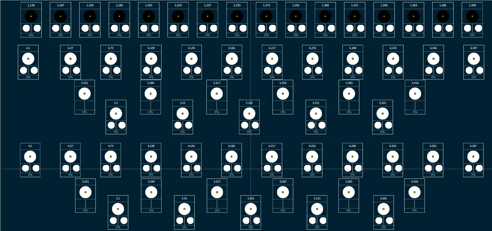
Topos may be used for having a graphical Live view of the stage lighting, where the Global Icons of the fixtures show in real time their intensity level, position, color, prism and gobo wheels’ steps.
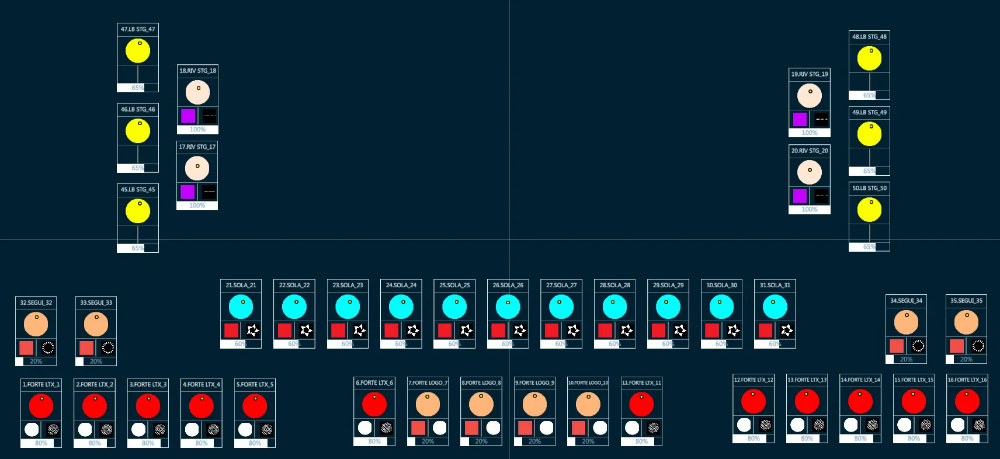
Topos may be used to create an intuitive ready-to-use interface that allows any not-experiences people to make a fixture selection and trigger Vibe objects such as Libraries, Snaps or Macros.
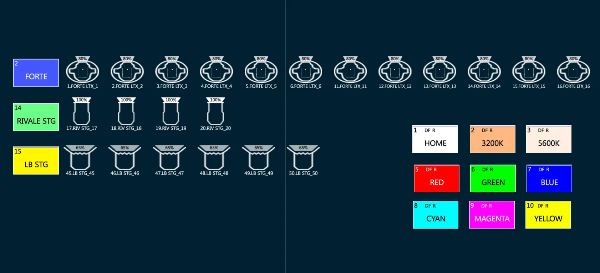
Topos may be set with a Front view and a Background, showing the stage appearance and positioning the Global Icons over the image, to simplify the lighting rig checking process.
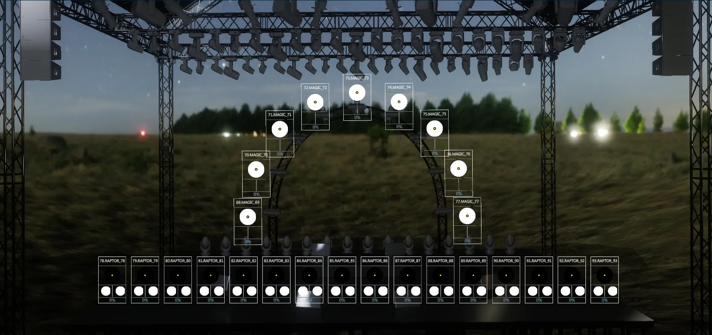
Topos may be set with a Top view and a Background, showing the stage appearance and positioning the Fixture Icons over the image, to simplify the fixture selection process.
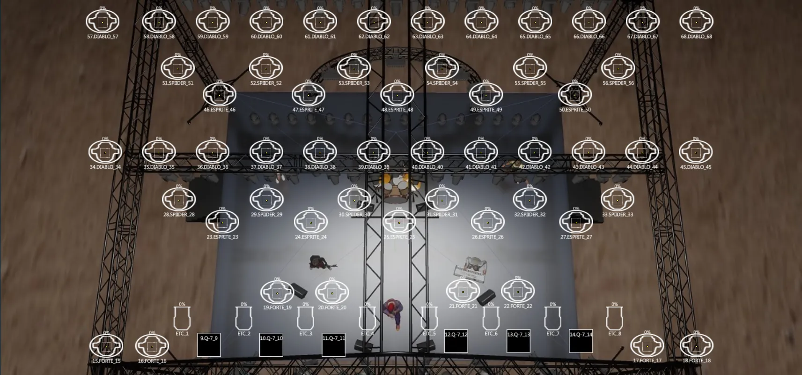
Topos may be used to simplify the management of the more complicated fixtures (such as the ones made of many sub-fixtures) and the control of Media Servers, by adding softkeys of the needed Groups and Libraries that may be easily activated.
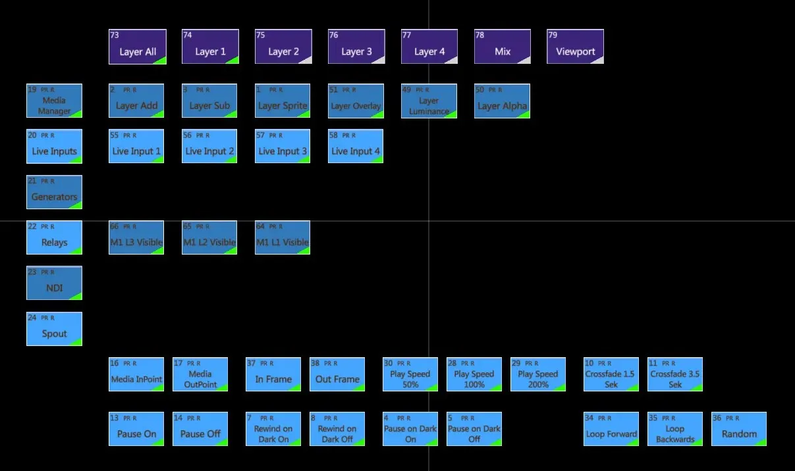
Topos may be set using the text and background color options in the object settings in order to easily recognize fixtures per type.
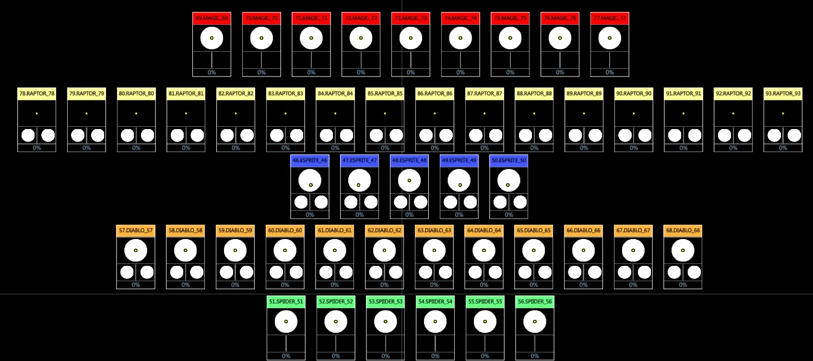